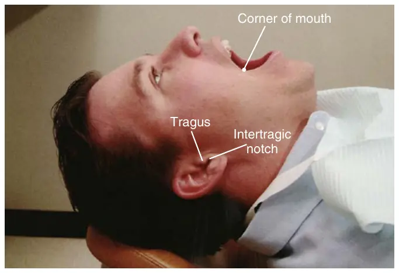

نسخه استخراجشده؛ ترجمه یا تأیید علمی انجام نشده است. وضعیت: captured
قدم 1 · theory
جمعبندی دو بلاک جایگزین IANB
گاو-گیتس
سوزن بلند گیج ۲۵ یا ۲۷؛ بیمار خوابیده، گردن کمی به عقب، دهان کاملاً باز.
ورود دیستال مولر دوم بالا، همسطح کاسپ مزیوپالاتال آن؛ سوزن در امتداد گوشهی دهان طرف مقابل تا ناچ اینترتراگوس.
برخورد با گردن کندیل در حدود ۲۵ میلیمتر، ۱ میلیمتر عقب، آسپیراسیون در دو صفحه.
۱٫۸ میلیلیتر در ۶۰ تا ۹۰ ثانیه؛ دهان ۱ تا ۲ دقیقه باز؛ دستکم ۵ دقیقه صبر.
واَزیرانی-آکینوسی
دندانها روی هم؛ سوزن بلند گیج ۲۵ همسطح MGJ مولر سوم بالا، کنار توبروزیته.
سرنگ موازی سطح اکلوزال فک بالا؛ بول رو به خط میانی.
۲۵ میلیمتر از توبروزیته، بدون برخورد با استخوان؛ ۱٫۵ تا ۱٫۸ میلیلیتر.
چند نکتهی تکمیلی
در روش اولیهی گاو-گیتس ۳ میلیلیتر تزریق میشد، ولی ۱٫۸ میلیلیتر تقریباً همیشه کافی است. حجم پیشنهادی در کودک ۰٫۹ میلیلیتر است.
خم کردن سوزن در روش دهان بسته خطر شکستن سوزن را بالا میبرد و توصیه نمیشود؛ بلاک بدون آن هم موفق است.
بلاک خارج دهانی V3 از راه ناچ سیگموئید هم در تریسموس کار میکند، چون V3 عصب حرکتی عضلات جونده است؛ ولی فقط در دست کسی که در آن ورزیده است.
دستکم در یکی از این دو بلاک مهارت پیدا کن و دیگری را هم بشناس.

لندمارکهای بیرونی گاو-گیتس: گوشهی دهان و ناچ اینترتراگوس، که مسیر سوزن را تعیین میکنند. (Malamed. Handbook of Local Anesthesia, 7th ed. — Fig. 14.18)
قدم 2 · question
در گاو-گیتس بدنهی سرنگ معمولاً روی پرمولرهای طرف مقابل است. در بیماری با واگرایی متفاوت راموس، جای بدنه چه میشود؟
۰۱
ثابت است و در همهی بیماران باید دقیقاً روی پرمولر اول طرف مقابل بماند
۰۲
بسته به واگرایی راموس جابهجا میشود و ممکن است از مولرها تا ثنایاها برود
۰۳
به گوشهی دهان همان سمت میرود تا سوزن موازی سطح داخلی راموس شود
۰۴
تغییری نمیکند، ولی عمق نفوذ سوزن در این بیماران تا ۴۰ میلیمتر بیشتر میشود
قدم 3 · question
در روش اولیهی گاو-گیتس چه حجمی تزریق میشد و امروز معمولاً چه حجمی کافی است؟
۰۱
۵٫۴ میلیلیتر در روش اولیه؛ امروز ۳ میلیلیتر، یعنی کمی بیش از یک کارپول و نیم
۰۲
۱٫۸ میلیلیتر در روش اولیه؛ امروز ۳٫۶ میلیلیتر، یعنی دو کارپول، لازم است
۰۳
۰٫۹ میلیلیتر در روش اولیه؛ امروز ۱٫۵ میلیلیتر، مثل IANB، توصیه میشود
۰۴
۳ میلیلیتر در روش اولیه؛ امروز ۱٫۸ میلیلیتر تقریباً همیشه کافی است
قدم 4 · question
دانشجویی میگوید: «آسپیراسیون مثبت در گاو-گیتس فقط ۲٪ است؛ پس آسپیره کردن در آن لازم نیست.» کدام پاسخ درست است؟
۰۱
آسپیراسیون لازم است؛ ۲٪ یعنی احتمال کم نه صفر، و تزریق داخل رگ حتی دوبینی گذرا میدهد
۰۲
حرفش درست است؛ در گاو-گیتس برخورد با استخوان جای آسپیراسیون را کاملاً میگیرد و آسپیره کردن فقط وقت را میگیرد
۰۳
حرفش درست است، به شرط آنکه سوزن گیج ۳۰ باشد تا رگ را سوراخ نکند
۰۴
آسپیراسیون فقط در سمت چپ لازم است، چون شریان در سمت راست دورتر است
قدم 5 · question
کدام ناحیهی پوستی پس از گاو-گیتس بیحس میشود ولی پس از IANB نه؟
۰۱
پوست زیر چانه و ناحیهی زیرفکی در همان سمتی که تزریق کردی
۰۲
پوست لب بالا، کنارهی بینی و پلک پایین در همان سمت تزریق
۰۳
پوست روی زیگوما، بخش خلفی گونه و ناحیهی تمپورال
۰۴
پوست لالهی گوش، پشت گوش و پشت گردن در همان سمت تزریق
قدم 6 · question
پس از بلاک واَزیرانی-آکینوسی، بیحسی لب و زبان معمولاً کی شروع میشود و کار کی شروعشدنی است؟
۰۱
حدود ۱۰ تا ۱۵ دقیقه؛ کار پس از حدود ۲۰ دقیقه صبر
۰۲
حدود ۱ تا ۱٫۵ دقیقه؛ کار معمولاً تا ۵ دقیقه
۰۳
حدود ۵ دقیقه؛ کار پس از دستکم ۱۵ دقیقه صبر کامل
۰۴
بلافاصله پس از پایان تزریق؛ کار بیهیچ صبر و انتظاری
قدم 7 · question
برای موفقیت بلاک واَزیرانی-آکینوسی باید سوزن را پیش از ورود حدود ۴۵ درجه خم کنی تا کنار راموس بماند.
۰۱
صحیح
۰۲
غلط
قدم 8 · question
برای کودک هشتسالهای با محدودیت باز شدن دهان، دانشجو میخواهد بلاک دهان بسته را با عمق ۲۵ میلیمتر بزند. کدام نکته مهمتر است؟
۰۱
در کودک عمق را ۳۵ میلیمتر کن تا سوزن حتماً به فضای پتریگومندیبولار برسد
۰۲
عمق ۲۵ میلیمتر در همهی سنین درست است، چون همیشه از توبروزیتهی فک بالا اندازه گرفته میشود و به سن ربطی ندارد
۰۳
عمق ۲۵ میلیمتر مال بزرگسال متوسط است؛ در کودک باید کمتر باشد و بلاک کماطمینانتر است
۰۴
در کودک بلاک دهان بسته ممنوع مطلق است و باید گاو-گیتس با دهان نیمهباز زد
قدم 9 · question
بلاک خارج دهانی V3 از راه ناچ سیگموئید در تریسموس هم کاربرد دارد، ولی فقط در دست کسی که در آن ورزیده است.
۰۱
صحیح
۰۲
غلط
قدم 10 · question
پس از گاو-گیتس، هنگام برش فلپ در باکال مولر سوم پایین بیمار درد تیز دارد، ولی لب و زبانش بیحس است. کار درست کدام است؟
۰۱
عصب لینگوال بلاک نشده است؛ بیحسی زبان گمراهکننده است و باید آن را دوباره بلاک کنی
۰۲
گاو-گیتس کامل شکست خورده است؛ بیدرنگ IANB را از نو و با دو کارپول بزن
۰۳
احتمالاً عصب باکال از آن یک چهارم بیمارانی است که گرفته نشده؛ بلاک باکال بزن
۰۴
درد روانی است، چون لب و زبان بیحساند؛ بیمار را آرام کن و ادامه بده
قدم 11 · question
در بلاک دهان بسته، هنگام آسپیراسیون خون قرمز روشن بهسرعت وارد کارپول میشود. کار درست کدام است؟
۰۱
سرنگ را بیرون بیاور، کارپول را عوض کن و از نو با آسپیراسیون شروع کن
۰۲
کمی عقب بکش و همان کارپول خونآلود را آرام تزریق کن، چون احتمال خطر کم است
۰۳
تزریق را ادامه بده؛ آسپیراسیون مثبت در این بلاک همیشه از ورید است و بیخطر
۰۴
سوزن را ۵ میلیمتر دیگر پیش ببر تا از رگ بگذری و بعد تزریق کن
قدم 12 · question
پس از گذشتن از منحنی یادگیری، موفقیت گاو-گیتس بیش از ۹۵٪ است.
۰۱
صحیح
۰۲
غلط
قدم 13 · question
موفقیت بلاک دهان بسته در تریسموس شدید، پس از کسب تجربه، حدوداً چقدر است؟
۰۱
کمتر از ۲۰٪، و برای همین فقط بهعنوان آخرین راه به کار میرود
۰۲
بیش از ۸۰٪، جایی که IANB و گاو-گیتس تقریباً شانسی ندارند
۰۳
حدود ۵۰٪، برابر با IANB در همان بیماران دچار تریسموس شدید و طولانی
۰۴
صد در صد، چون بلاک حرکتی همیشه با بیحسی کامل پالپ همراه است
قدم 14 · question
برای گاو-گیتس سمت راست در بیماری با مولر سوم بالای رویشیافته در اکلوژن طبیعی، کدام توالی کامل درست است؟